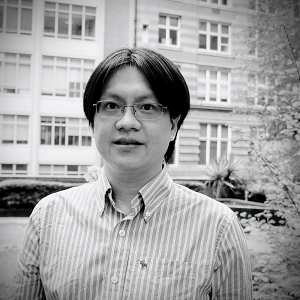

Chukwudubem Umeano, PhD student

Chukwudubem completed his Bachelor’s degree in Physics at the University of Warwick (UK) in 2020, followed by a Master’s degree in Quantum Fields and Fundamental Forces at Imperial College London (UK) in 2021.
He joined the QuDOS group as a PhD student in 2021, where he focuses on quantum feature maps and the design of expressive quantum circuits for quantum machine learning applications. His research combines quantum information theory with data-driven representations, targeting efficient algorithms for quantum-enhanced inference.
Alongside his research, Chukwudubem has contributed to several applied projects, including work on topological data analysis with Vorsus Ltd. and complex network modelling for Frazer-Nash Consultancy and Dstl. He was also part of the Quantum Digital Twin collaboration with the National Physical Laboratory, developing digital frameworks for quantum hardware simulation and benchmarking.
Together with Oleksandr Kyriienko, Chiddy became a semi-finalist of the XPRIZE Quantum Applications competition for proposing impactful use-cases of quantum technologies.
See his recent publications on Google Scholar.
Chelsea Williams, PhD student

Chelsea Williams joined the QuDOS group in 2022 as a PhD candidate sponsored by a collaborative project with PASQAL and Siemens AG, focusing on differential equation solvers
in quantum computing. Chelsea has a strong academic background in applied mathematics and theoretical physics, receiving an MASt degree from the University of Cambridge in 2021, and a BSc in Physics from
King’s College London, where she performed computational studies and data analysis applied to astronomical observations.
Chelsea comes with a professional background, previously being a Quantitative Analyst at NatWest Markets. Her experience includes programming quantum annealers for combinatorial optimisation,
development of a recommendation engine for the sales team, and creation of data-driven ML models. She has also completed numerous internships in leading firms, with placements at Macquarie, UBS, GSK and others.
Chelsea is committed to developing algorithms for fault-tolerant quantum computers and innovating the field from both academic and industrial perspectives.
Yuan Wang, Postdoctoral Research Fellow
Dr Yuan Wang joined the QuDOS group in July 2024 after completing his PhD in Physics at the University of Southampton on exciton–polariton condensates. His research spans quantum light–matter interaction, polariton physics, and GPU-accelerated scientific computing.
At QuDOS, Yuan concentrates on physics-based AI methods and develops machine-learning approaches that incorporate polaritonic and optical devices as physical substrates for computation. His work bridges theoretical modelling with numerical and hardware-efficient implementations of quantum and photonic learning architectures.
Before joining QuDOS, Yuan studied and worked across Europe, contributing to projects in quantum optics and non-perturbative light–matter coupling. Learn more on his personal website.
Marcin Jastrzębski, Postdoctoral Research Fellow
Dr Marcin Jastrzebski joined the QuDOS group and the Sheffield Quantum Centre in 2025 as a postdoctoral researcher working within the UK Quantum Computing and Simulation Hub (QCi3). His research focuses on quantum machine learning and the development of new algorithms that combine rigorous quantum physics with data-driven methods.
Marcin obtained his PhD in Physics from University College London (UCL), where he worked on quantum machine learning and variational algorithms for quantum data analysis. His expertise spans quantum information theory, optimisation, and the use of hybrid quantum-classical models for scientific discovery.
At QuDOS, he contributes to theoretical and computational aspects of quantum AI and learning architectures, advancing the mission of the Sheffield Quantum Centre to build novel quantum AI algorithms. More details are available on his UCL profile.
Tariq Mahassen, PhD student
Tariq Mahassen joined the QuDOS group in 2025 as a PhD student working on quantum machine learning algorithms and their applications to physics-inspired problems. His research explores hybrid quantum–classical learning methods, quantum feature maps, and algorithmic design for near-term quantum processors.
Tariq completed his undergraduate studies in Physics at the University of Sheffield, where he conducted a final-year project in astrophysics. During his degree he also spent a year abroad at the University of Texas at Austin, expanding his background in computational and theoretical physics.
He is passionate about quantum algorithms and their potential impact across scientific computing, particularly in high-energy physics and complex-system modelling.
Ryan (Dat Chi) Le, MSc student
Ryan (Chi Dat) Le is an MSc student at the University of Sheffield working with the QuDOS group on photonic quantum machine learning and generative modelling. His project explores how optical systems and polaritonic devices can be used to implement learning architectures inspired by physics-based AI.
Ryan completed his undergraduate studies in Physics and is now focusing on quantum information science and photonic technologies. His broader research interests include quantum computing, optical neural networks, and data-driven approaches for complex systems.
Learn more about Ryan on his LinkedIn profile.
Stefano Scali, Postdoctoral Research Fellow
Dr Stefano Scali joined the QuDOS group as a Postdoctoral Research Fellow on an Innovate UK project with Vorsus Ltd.
He is a specialist in quantum open systems and graph theory, and developed quantum protocols for topological data analysis. Stefano holds a BSc in Physics and Advanced Technologies from the Università degli Studi di Siena,
and an MASt in Physics from the University of Cambridge.
Dr Scali earned his PhD in Physics, completing a project focused on open quantum systems — studying coupling to
environment in classical and quantum settings.
Stefano's expertise spans theoretical physics, numerical simulations, and software development, with proficiency in Julia, Python, C, and Mathematica. He develops innovative approaches to model quantum systems, with highlights like stochastic spin dynamics (as a stand-alone Julia package)
and studies on exceptional points in wave scattering.
Before joining academia, Stefano also worked as a front-end developer at Koodi and as a CNC programmer/carpenter at Falegnameria Fosca, using CAD/CAM
design. This combination of industrial and academic experience brought him into the world of quantum computing.
Now: Senior Quantum Researcher, Fujitsu UK.
Madhumita Sarkar, Postdoctoral Research Fellow
Dr Madhumita Sarkar was a postdoctoral researcher with the QuDOS group, where she worked on tensor-network simulations supporting our quantum computing projects.
Madhumita worked on the collaborative project together with the National Physical Laboratory.
Her interests include many-body physics, quantum information, and efficient numerical methods for simulating quantum systems.
Now: Postdoctoral Researcher, University College London (UCL).
Hsin-Yu (Ryan) Wu, Postdoctoral Research Fellow
Hsin-Yu (Ryan) Wu joined the QuDOS group in 2023, enhancing collaboration with PASQAL and focusing on quantum scientific machine learning and differential equation solvers. His educational
background includes a PhD in Electrical and Computer Engineering from the University of Illinois at Urbana-Champaign, an MS in Power Mechanical Engineering from National Tsing Hua University,
and a BS in Mechanical Engineering from National Taipei University of Technology.
Ryan previously served as a Research Fellow at the Living Systems Institute, and has held independent research roles and appointments in Singapore and Taiwan.
From the industrial perspective, Hsin-Yu has hands-on experience in R&D engineering. He is passionate about developing new computational solutions
in the scientific and quantum computing domain.
Kok Wee Song, Postdoctoral Research Fellow

Kok Wee obtained his Bachelor's degree at National Tsing Hua University (Taiwan) and completed his PhD at the University of Southern California (US) in physics.
After graduation, he was a postdoc at Argonne National Laboratory (US), focusing on the theory of multiband superconductivity. Then, he moved to the National Graphene Institute (UK),
working on the optical properties and electronic correlation effects in 2D materials as a research associate.
He later served as a postdoctoral research fellow with the QuDOS group.
His primary research background is in the emergent phenomena of quantum many-body systems. More recently, he developed strong interest in quantum optics with
2D materials, and led research in nonlinear polaritonics based on transition metal dichalcogenide monolayers.
Now: Associate Professor, Xiamen University Malaysia.
Annie Paine, PhD student

Annie received her Bachelor’s degree in Mathematics at the University of Oxford (UK) in 2018. She finished a Master’s degree in Mathematical and Theoretical Physics at
the University of Oxford (UK) in 2019.
Between years at university she completed two internships, both programming-related. There she improved her programming skills (particularly
in C++, Python and Rust) as well as experiencing work in a team in a professional setting. At her second internship with Metaswitch, Annie gained experience in
presenting progress and results as she was placed in a team with daily stand-ups.
From 2020 Annie was a PhD student affiliated with the QuDOS group, sponsored by Qu & Co and supervised by Dr Kyriienko.
Her project focused on finding useful quantum algorithms for near-term quantum devices, with emphasis on hybrid and variational approaches. Application areas included differential equations and ground-state estimation in computational chemistry.
Until late 2025:Quantum Researcher at Pasqal, London office.
Now: Senior Quantum Researcher, Fujitsu UK.
Salvatore Chiavazzo, PhD student
Salvatore finished his Bachelor’s degree in Physics at the University of Naples (Italy) in 2017. He accomplished his Master’s degree in Physics (Condensed Matter training track)
at the University of Trieste (Italy) in 2019.
During 2019 he was a visitor at the Institute for Quantum Computing, Waterloo (Canada), to carry out a master’s thesis project. The research stay was funded with the
Extra-Erasmus scholarship.
From 2020, Salvatore was a PhD student affiliated with the QuDOS group.
Salvatore's research focused on two-dimensional materials, strong light-matter coupling, and optomechanics.
He described and characterized two-phonon cooling in electromechanical systems operating in the microwave domain, and
introduced the effects of strong coupling to doped TMD systems.
His later activity included theoretical descriptions of dipolaritons in TMD bilayers and applications to single-photon emission.
Now: Researcher, ISC-CNR, Rome, Italy.
Jon Middle, MSc by Research
Jon Middle completed his Master’s by Research under the supervision of Dr Oleksandr Kyriienko, working on theoretical aspects of quantum computing and light–matter interaction. Before returning to academia, he taught physics at school, where he developed a passion for communicating science and inspiring curiosity in fundamental concepts.
Jon is fascinated by the deep connections between quantum physics, light–matter interaction, and gravity, and continues to explore these themes in his current research.
Now: PhD researcher at the University of Exeter, working under the supervision of Dr Eros Mariani.
Daniel Winter, MSc student

Daniel was an MSc student accomplishing his project on quantum computing under the supervision of Dr Kyriienko.
He aimed to progress in the aerospace industry, develop his coding skills, and apply computing to advanced engineering.
Daniel has experience with Python, C and Julia. In the project he developed digital quantum simulators for discrete time crystals, specifically studying the extension from 1D to 2D geometries and tensor-network simulation.
Daniel can be contacted via LinkedIn profile.
Now: Structural Systems Design Engineer at Rolls-Royce.
Paul Taylor, MSc student

Paul began his MSc project on simulating time-translation symmetry breaking with quantum computers.
He is interested in various aspects of quantum theory, and specifically quantum simulation of many-body dynamics. As a first step, he ran discrete time-crystal evolution with various Qiskit back-ends, and benchmarked it on IBM Quantum devices available in the cloud.
His other interests include elementary particle physics.
Paul can be contacted via LinkedIn profile.
Now:Consulting Engineer at Decho Group, London.
Kieron Lintott, MSc student

Kieron Lintott was an MSc Physics student working on a quantum time-crystal project under the supervision of Dr Kyriienko.
His interests lie in quantum mechanics and theoretical physics, and more generally in solving challenging problems.
Kieron developed new computational skills and is an enthusiast of collaborative coding. He programmes in Python, Julia and C, and explores various machine-learning approaches.
Kieron can be contacted via LinkedIn profile.
Now:PhD student in Theoretical Condensed Matter, Loughborough University.
Tatiana Bespalova

In 2020 Tatiana applied for an internship as part of a research collaboration with the QuDOS group. While working under the mentorship of
Dr Oleksandr Kyriienko she developed a protocol for Hamiltonian operator approximation, a tool for energy estimation used in various algorithms.
She subsequently researched new variational ansätze and simulation schemes for complex spin models.
Her research during her education included performing molecular modelling and exploring non-perturbative effects in quantum field theory. She hopes to
develop or realize quantum algorithms to solve some of the problems in these areas one day. After her bachelor’s graduation she decided to take the challenge of
exploring quantum computing. With few courses available locally, she studied independently (Nielsen & Chuang and other literature) and started research on Hamiltonian-operator simulation.
Tatiana has now got a PhD in quantum algorithms from the University of Strasbourg, France, co-funcded by IBM Zürich, Switzerland.